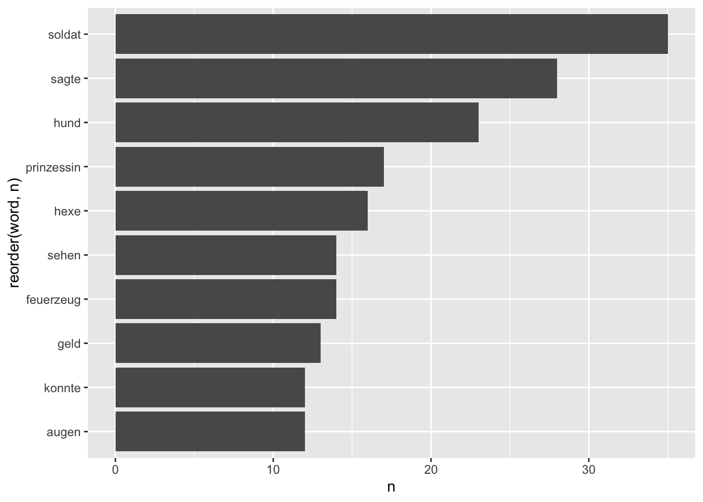
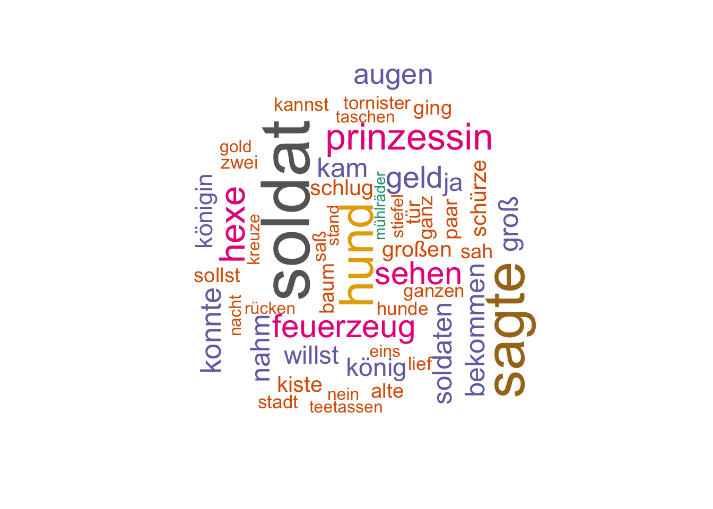
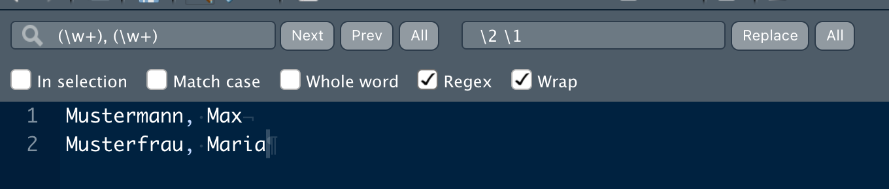
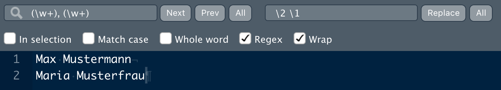

library(tidyverse)
library(tokenizers) # Tokenisieren
library(tidymodels) # Rezepte für Textverarbeitung
library(tidyverse)
library(tidytext) # Textanalyse-Tools
library(hcandersenr) # Textdaten: Märchen von H.C. Andersen
library(SnowballC) # Stemming
library(lsa) # Stopwörter
library(easystats) # Komfort für deskriptive Statistiken, wie `describe_distribution`
library(textclean) # Emojis ersetzen
library(wordcloud) # unübersichtlich, aber manche mögen es4 Textmining 1
 Bild von mcmurryjulie auf Pixabay
Bild von mcmurryjulie auf Pixabay
4.1 Vorab
4.1.1 Lernziele
- Die vorgestellten Techniken des Textminings mit R anwenden können
4.1.2 Vorbereitung
- Lesen Sie in Hvitfeldt und Silge (2021) Kap. 2.
4.1.3 Benötigte R-Pakete
4.2 Einfache Methoden des Textminings
Definition 4.1 (Natural Language Processing) Die Analyse von Texten (natürlicher Sprache) mit Hilfe von Methoden des Maschinellen Lernens bezeichnet man (auch) als Natural Language Processing (NLP). \(\square\)
4.2.1 Tokenisierung
Erarbeiten Sie dieses Kapitel: Hvitfeldt und Silge (2021), Kap. 2
Wie viele Zeilen hat das Märchen “The Fir tree” (in der englischen Fassung?)
4.2.2 Stopwörter entfernen
Erarbeiten Sie dieses Kapitel: s. Hvitfeldt und Silge (2021), Kap. 3
Eine alternative Quelle von Stopwörtern - in verschiedenen Sprachen - biwetet das Paket quanteda:
Es bestehst (in der deutschen Version) aus 231 Wörtern.
4.2.3 Wörter zählen
Ist der Text tokenisiert, kann man einfach mit “Bordmitteln” die Wörter zählen (Bordmittel aus dem Tidyverse, in diesem Fall).
hc_andersen_count <-
hcandersen_de %>%
filter(book == "Das Feuerzeug") %>%
unnest_tokens(output = word, input = text) %>%
anti_join(stop2) %>%
count(word, sort = TRUE)
## Joining with `by = join_by(word)`
hc_andersen_count %>%
head()Zur Visualisierung eignen sich Balkendiagramme, s. ?fig-hcandersen-count.
hc_andersen_count %>%
slice_max(order_by = n, n = 10) %>%
mutate(word = factor(word)) %>%
ggplot() +
aes(y = reorder(word, n), x = n) +
geom_col()

Dabei macht es Sinn, aus word einen Faktor zu machen, denn Faktorstufen kann man sortieren, zumindest ist das die einfachste Lösung in ggplot2 (wenn auch nicht super komfortabel).
Eine (beliebte?) Methode, um Worthäufigkeiten in Corpora darzustellen, sind Wortwolken, s. Abbildung 4.2. Es sei hinzugefügt, dass solche Wortwolken nicht gerade optimale perzeptorische Qualitäten aufweisen.
wordcloud(words = hc_andersen_count$word,
freq = hc_andersen_count$n,
max.words = 50,
rot.per = 0.35,
colors = brewer.pal(8, "Dark2"))
4.2.4 tf-idf
4.2.4.1 Grundlagen
Was sind “häufige” Wörter? Wörter wie “und” oder “der” sind sehr häufig, aber sie nicht spezifisch für bestimmte Texte. Sie sind sozusagen “Allerweltswörter”. Man könnte argumentieren, was wir suchen, sind nicht einfach häufige Wörter, sondern Wörter, die relevant sind. Unter “relevant” könnte man verstehen “häufig aber spezifisch”.
Da kommt tf-idf ins Spiel (term frequency–inverse document frequency). tf-idf ist eine Möglichkeit, Wörter die häufig und gleichzeitig spezifisch für einen Text sind, aufzufinden.
Betrachten wir als Beispiel Tabelle 4.1 (Quelle). Das Wort “Romeo” ist hoch spezifisch in dem Sinne, dass sein idf hoch ist (relativ zu den anderen Wörtern). Im Gegensatz dazu ist das Wort “good” nicht spezifisch für ein bestimmtes Stück von Shakespeare - der IDF-Wert ist sehr klein.
Tabelle 4.1:
Einige Wörter aus Shakespeares Werken
Definition 4.2 (Text Frequency (Worthäufigkeit)) Die Worthäufigkeit (Vorkommenshäufigkeit) eines Wortes (oder Terms, Tokens) \(h_w\) in einem Dokument \(d\) (oder Corpus) ist definiert als die Häufigkeit des Wortes geteilt durch die Anzahl aller Wörter des Dokuments, \(h_d\):
\(tf(w,d) = \frac{h_w}{h_d} \square\)
Manchmal wird auch eine logarithmierte Version verwendet.
Definition 4.3 (Inverse Document Frequency (Inverse Dokumenthäufigkeit)) Die IDF eines Wortes hängt erstens von der Gesamtzahl der Dokumente (nicht Wörter) im Corpus, \(N\), ab. Zweitens hängt IDF davon ab, wie viele Dokumente das Wort enthalten, \(N_w\).
\(idf(w,c) = log \frac{N}{N_w} \square\)
Definition 4.4 (TF-IDF) TF-IDF ist ein Maß zur Beurteilung der Relevanz von Wörtern eines Corpus.
\(\text{tf-idf} = tf \cdot idf \qquad \square\)
4.2.4.2 Beispiel zur tf-idf
#library(hcandersenr)
data(hcandersen_de)
hca_count <-
hcandersen_de |>
unnest_tokens(word, text) |>
count(book, word, sort = TRUE) |> # Zähle Wörter pro Buch
ungroup() # um gleich nur nach Bücher zu gruppieren
head(hca_count)Die Gesamtzahl der Wörter pro Buch:
words_total <-
hca_count |>
group_by(book) |>
summarise(total = sum(n))
words_total |>
head() # die ersten paar von 150 BüchernDann fügen wir die Spalte mit der Gesamt-Wortzahl des jeweiligen Buches zur Tabelle hca_count hinzu:
hca_count <-
hca_count |>
left_join(words_total)
## Joining with `by = join_by(book)`
head(hca_count)hca_count <-
hca_count |>
bind_tf_idf(term = word, document = book, n = n)
hca_count |>
arrange(-tf_idf) |>
head()4.2.5 Stemming (Wortstamm finden)
Erarbeiten Sie dieses Kapitel: Hvitfeldt und Silge (2021), Kap. 4
Vertiefende Hinweise zum UpSet plot finden Sie hier, Lex u. a. (2014).
Für welche Sprachen gibt es Stemming im Paket SnowballC?
library(SnowballC)
getStemLanguages()
## [1] "arabic" "basque" "catalan" "danish" "dutch"
## [6] "english" "finnish" "french" "german" "greek"
## [11] "hindi" "hungarian" "indonesian" "irish" "italian"
## [16] "lithuanian" "nepali" "norwegian" "porter" "portuguese"
## [21] "romanian" "russian" "spanish" "swedish" "tamil"
## [26] "turkish"Einfacher Test: Suchen wir den Wordstamm für das Wort “wissensdurstigen”, wie in “die wissensdurstigen Studentis löcherten dis armi Professi”1.
wordStem("wissensdurstigen", language = "german")
## [1] "wissensdurst"Werfen Sie mal einen Blick in das Handbuch von SnowballC.
4.2.6 Fallstudie AfD-Parteiprogramm
Daten einlesen:
d_link <- "https://raw.githubusercontent.com/sebastiansauer/pradadata/master/data-raw/afd_2022.csv"
afd <- read_csv(d_link, show_col_types = FALSE)Wie viele Seiten hat das Dokument?
nrow(afd)
## [1] 190Und wie viele Wörter?
Aus breit mach lang, oder: wir tokenisieren (nach Wörtern):
afd %>%
unnest_tokens(output = token, input = text) %>%
filter(str_detect(token, "[a-z]")) -> afd_longStopwörter entfernen:
Wörter zählen:
Wörter trunkieren:
4.2.7 Stringverarbeitung
Erarbeiten Sie dieses Kapitel: Wickham und Grolemund (2016), Kap. 14
4.2.7.1 Regulärausdrücke
Das "[a-z]" in der Syntax oben steht für “alle Buchstaben von a-z”. D iese flexible Art von “String-Verarbeitung mit Jokern” nennt man Regulärausdrücke (regular expressions; regex). Es gibt eine ganze Reihe von diesen Regulärausdrücken, die die Verarbeitung von Texten erleichert. Mit dem Paket stringr geht das - mit etwas Übung - gut von der Hand. Nehmen wir als Beispiel den Text eines Tweets:
string <- "Correlation of unemployment and #AfD votes at #btw17: ***r = 0.18***\n\nhttps://t.co/YHyqTguVWx" Möchte man Ziffern identifizieren, so hilft der Reulärausdruck [:digit:]:
“Gibt es mindestens eine Ziffer in dem String?”
str_detect(string, "[:digit:]")
## [1] TRUE“Finde die Position der ersten Ziffer! Welche Ziffer ist es?”
str_locate(string, "[:digit:]")
## start end
## [1,] 51 51
str_extract(string, "[:digit:]")
## [1] "1"“Finde alle Ziffern!”
str_extract_all(string, "[:digit:]")
## [[1]]
## [1] "1" "7" "0" "1" "8"“Finde alle Stellen an denen genau 2 Ziffern hintereinander folgen!”
str_extract_all(string, "[:digit:]{2}")
## [[1]]
## [1] "17" "18"Der Quantitätsoperator {n} findet alle Stellen, in der der der gesuchte Ausdruck genau \(n\) mal auftaucht.
“Zeig die Hashtags!”
str_extract_all(string, "#[:alnum:]+")
## [[1]]
## [1] "#AfD" "#btw17"Der Operator [:alnum:] steht für “alphanumerischer Charakter” - also eine Ziffer oder ein Buchstabe; synonym hätte man auch \\w schreiben können (w wie word). Warum werden zwei Backslashes gebraucht? Mit \\w wird signalisiert, dass nicht der Buchstabe w, sondern etwas Besonderes, eben der Regex-Operator \w gesucht wird.
“Zeig die URLs!”
str_extract_all(string, "https?://[:graph:]+")
## [[1]]
## [1] "https://t.co/YHyqTguVWx"Das Fragezeichen ? ist eine Quantitätsoperator, der einen Treffer liefert, wenn das vorherige Zeichen (hier s) null oder einmal gefunden wird. [:graph:] ist die Summe von [:alpha:] (Buchstaben, groß und klein), [:digit:] (Ziffern) und [:punct:] (Satzzeichen u.ä.).
“Zähle die Wörter im String!”
“Liefere nur Buchstabenfolgen zurück, lösche alles übrige”
str_extract_all(string, "[:alpha:]+")
## [[1]]
## [1] "Correlation" "of" "unemployment" "and" "AfD"
## [6] "votes" "at" "btw" "r" "https"
## [11] "t" "co" "YHyqTguVWx"Der Quantitätsoperator + liefert alle Stellen zurück, in denen der gesuchte Ausdruck einmal oder häufiger vorkommt. Die Ergebnisse werden als Vektor von Wörtern zurückgegeben. Ein anderer Quantitätsoperator ist *, der für 0 oder mehr Treffer steht. Möchte man einen Vektor, der aus Stringen-Elementen besteht zu einem Strring zusammenfüngen, hilft paste(string) oder str_c(string, collapse = " ").
str_replace_all(string, "[^[:alpha:]+]", "")
## [1] "CorrelationofunemploymentandAfDvotesatbtwrhttpstcoYHyqTguVWx"Mit dem Negationsoperator [^x] wird der Regulärausrck x negiert; die Syntax oben heißt also “ersetze in string alles außer Buchstaben durch Nichts”. Mit “Nichts” sind hier Strings der Länge Null gemeint; ersetzt man einen belieibgen String durch einen String der Länge Null, so hat man den String gelöscht.
Das Cheatsheet zur Strings bzw zu stringr von RStudio gibt einen guten Überblick über Regex; im Internet finden sich viele Beispiele.
4.2.7.2 Regex im Texteditor
Einige Texteditoren unterstützen Regex, so auch RStudio.
Das ist eine praktische Sache. Ein Beispiel: Sie haben eine Liste mit Namen der Art:
- Nachname1, Vorname1
- Nachname2, Vorname2
- Nachname3, Vorname3
Und Sie möchten jetzt aber die Liste mit Stil Vorname Nachname sortiert haben.
RStudio mit Regex macht’s möglich, s. ?fig-vorher-regex.

4.2.8 Emoji-Analyse
Eine einfache Art, Emojis in einer Textmining-Analyse zu verarbeiten, bietet das Paket textclean:
fls <- system.file("docs/emoji_sample.txt", package = "textclean")
x <- readLines(fls)[1]
x
## [1] "Proin 😍 ut maecenas 😏 condimentum 😔 purus eget. Erat, 😂vitae nunc elit. Condimentum 😢 semper iaculis bibendum sed tellus. Ut suscipit interdum😑 in. Faucib😞 us nunc quis a vitae posuere. 😛 Eget amet sit condimentum non. Nascetur vitae ☹ et. Auctor ornare ☺ vestibulum primis justo congue 😀urna ac magna. Quam 😥 pharetra 😟 eros 😒facilisis ac lectus nibh est 😙vehicula 😐 ornare! Vitae, malesuada 😎 erat sociosqu urna, 😏 nec sed ad aliquet 😮 ."replace_emoji(x)
## [1] "Proin d??? ut maecenas d??? condimentum d??? purus eget. Erat, d???vitae nunc elit. Condimentum d??c semper iaculis bibendum sed tellus. Ut suscipit interdumd??? in. Faucibd??? us nunc quis a vitae posuere. d??? Eget amet sit condimentum non. Nascetur vitae ^a?^1 et. Auctor ornare ^a?o vestibulum primis justo congue d???urna ac magna. Quam d??yen pharetra d??? eros d???facilisis ac lectus nibh est d???vehicula d??? ornare! Vitae, malesuada d??? erat sociosqu urna, d??? nec sed ad aliquet d??(R) ."
replace_emoji_identifier(x)
## [1] "Proin d??? ut maecenas d??? condimentum d??? purus eget. Erat, d???vitae nunc elit. Condimentum d??c semper iaculis bibendum sed tellus. Ut suscipit interdumd??? in. Faucibd??? us nunc quis a vitae posuere. d??? Eget amet sit condimentum non. Nascetur vitae ^a?^1 et. Auctor ornare ^a?o vestibulum primis justo congue d???urna ac magna. Quam d??yen pharetra d??? eros d???facilisis ac lectus nibh est d???vehicula d??? ornare! Vitae, malesuada d??? erat sociosqu urna, d??? nec sed ad aliquet d??(R) ."4.2.9 Text aufräumen
Eine Reihe generischer Tests bietet das Paket textclean von Tyler Rinker:
Hier ist ein “unaufgeräumeter” Text:
x <- c("i like", "<p>i want. </p>. thet them ther .", "I am ! that|", "", NA,
""they" they,were there", ".", " ", "?", "3;", "I like goud eggs!",
"bi\xdfchen Z\xfcrcher", "i 4like...", "\\tgreat", "She said \"yes\"")Lassen wir uns dazu ein paar Diagnostiken ausgeben.
Encoding(x) <- "latin1"
x <- as.factor(x)
check_text(x)
##
## =============
## NON CHARACTER
## =============
##
## The text variable is not a character column (likely `factor`):
##
##
## *Suggestion: Consider using `as.character` or `stringsAsFactors = FALSE` when reading in
## Also, consider rerunning `check_text` after fixing
##
##
## =====
## DIGIT
## =====
##
## The following observations contain digits/numbers:
##
## 10, 13
##
## This issue affected the following text:
##
## 10: 3;
## 13: i 4like...
##
## *Suggestion: Consider using `replace_number`
##
##
## ========
## EMOTICON
## ========
##
## The following observations contain emoticons:
##
## 6
##
## This issue affected the following text:
##
## 6: "they" they,were there
##
## *Suggestion: Consider using `replace_emoticons`
##
##
## =====
## EMPTY
## =====
##
## The following observations contain empty text cells (all white space):
##
## 1
##
## This issue affected the following text:
##
## 1: i like
##
## *Suggestion: Consider running `drop_empty_row`
##
##
## =======
## ESCAPED
## =======
##
## The following observations contain escaped back spaced characters:
##
## 14
##
## This issue affected the following text:
##
## 14: \tgreat
##
## *Suggestion: Consider using `replace_white`
##
##
## ====
## HTML
## ====
##
## The following observations contain HTML markup:
##
## 2, 6
##
## This issue affected the following text:
##
## 2: <p>i want. </p>. thet them ther .
## 6: "they" they,were there
##
## *Suggestion: Consider running `replace_html`
##
##
## ==========
## INCOMPLETE
## ==========
##
## The following observations contain incomplete sentences (e.g., uses ending punctuation like '...'):
##
## 13
##
## This issue affected the following text:
##
## 13: i 4like...
##
## *Suggestion: Consider using `replace_incomplete`
##
##
## =============
## MISSING VALUE
## =============
##
## The following observations contain missing values:
##
## 5
##
## *Suggestion: Consider running `drop_NA`
##
##
## ========
## NO ALPHA
## ========
##
## The following observations contain elements with no alphabetic (a-z) letters:
##
## 4, 7, 8, 9, 10
##
## This issue affected the following text:
##
## 4:
## 7: .
## 8:
## 9: ?
## 10: 3;
##
## *Suggestion: Consider cleaning the raw text or running `filter_row`
##
##
## ==========
## NO ENDMARK
## ==========
##
## The following observations contain elements with missing ending punctuation:
##
## 1, 3, 4, 6, 8, 10, 12, 14, 15
##
## This issue affected the following text:
##
## 1: i like
## 3: I am ! that|
## 4:
## 6: "they" they,were there
## 8:
## 10: 3;
## 12: bißchen Zürcher
## 14: \tgreat
## 15: She said "yes"
##
## *Suggestion: Consider cleaning the raw text or running `add_missing_endmark`
##
##
## ====================
## NO SPACE AFTER COMMA
## ====================
##
## The following observations contain commas with no space afterwards:
##
## 6
##
## This issue affected the following text:
##
## 6: "they" they,were there
##
## *Suggestion: Consider running `add_comma_space`
##
##
## =========
## NON ASCII
## =========
##
## The following observations contain non-ASCII text:
##
## 12
##
## This issue affected the following text:
##
## 12: bißchen Zürcher
##
## *Suggestion: Consider running `replace_non_ascii`
##
##
## ==================
## NON SPLIT SENTENCE
## ==================
##
## The following observations contain unsplit sentences (more than one sentence per element):
##
## 2, 3
##
## This issue affected the following text:
##
## 2: <p>i want. </p>. thet them ther .
## 3: I am ! that|
##
## *Suggestion: Consider running `textshape::split_sentence`4.2.10 Diverse Wortlisten
Tyler Rinker stellt mit dem Paket lexicon eine Zusammenstellung von Wortlisten zu diversen Zwecken zur Verfügung. Allerding nur für die englische Sprache.
4.2.11 One-hot-Enkodierung (Dummy-Variablen)
Viele Methoden des Maschinellen Lernens können keine nominalen Variablen verarbeiten. Daher müssen nominale Variablen vorab häufig erst in numerische Variablen umgewandelt werden. In der Textanalyse
Nehmen wir als einfaches Beispiel den berühmten Iris-Datensatz:
Tabelle im Lang-Format
Tabelle mit Spalte ‘Species’ im One-Hot-Format
4.2.11.1 Tidymodels
Tidymodels bieten eine recht komfortable Methode zur One-Hot-Transformation:
iris_rec <-
recipe( ~ ., data = iris) |>
step_dummy(Species, one_hot = TRUE)iris_rec_prepped <-
iris_rec |> prep()
iris_baked <-
iris_rec_prepped |> bake(new_data = NULL)iris_baked |>
select(starts_with("Species")) |>
head()tidymodels ist primär für das professionelle Modellieren angelegt; “mal eben” eine One-Hot-Enkodierung durchzuführen, braucht ein paar Zeilen Code.
Ohne den Parameter one_hot = TRUE würden anstelle von \(k\) Stufen nur \(k-1\) Stufen zurückgegeben werden.
Mal sehen, ob es auch schneller geht, also mit weniger Zeilen Code.
4.2.11.2 Base R: model.matrix
iris_one_hot_matrix <- model.matrix(~ 0 + Species, data = iris_mini)
iris_one_hot_matrix
## Speciessetosa Speciesversicolor Speciesvirginica
## 1 1 0 0
## 2 0 1 0
## 3 0 0 1
## attr(,"assign")
## [1] 1 1 1
## attr(,"contrasts")
## attr(,"contrasts")$Species
## [1] "contr.treatment"Das + 0 sorgt dafür, dass bei \(k\) Stufen von Species nicht, wie bei linearen Modellen nötig, \(k-1\) Stufen zurückgegeben werden, sondern \(k\) Stufen.
model.matrix gibt eine Matrix zurück; diese wandlen wir noch in einen Dataframe um:
iris_one_hot_matrix |>
as_tibble() |>
mutate(id = 1:n()) |>
select(id, everything())
4.2.11.3 Paket fastDummies
Das Paket fastDummies bietet ebenfalls eine recht einfache Konvertierung zu One-Hot-Enkodierung:
library(fastDummies)
## Thank you for using fastDummies!
## To acknowledge our work, please cite the package:
## Kaplan, J. & Schlegel, B. (2023). fastDummies: Fast Creation of Dummy (Binary) Columns and Rows from Categorical Variables. Version 1.7.1. URL: https://github.com/jacobkap/fastDummies, https://jacobkap.github.io/fastDummies/.
dummy_cols(iris_mini, select_columns = "Species") |>
select(starts_with("Species"))4.2.12 Sentimentanalyse
4.2.12.1 Einführung
Eine weitere interessante Analyse ist, die “Stimmung” oder “Emotionen” (Sentiments) eines Textes auszulesen. Die Anführungszeichen deuten an, dass hier ein Maß an Verständnis suggeriert wird, welches nicht (unbedingt) von der Analyse eingehalten wird. Jedenfalls ist das Prinzip der Sentiment-Analyse im einfachsten Fall so:
- Schau dir jeden Token aus dem Text an.
- Prüfe, ob sich das Wort im Lexikon der Sentiments wiederfindet.
- Wenn ja, dann addiere den Sentimentswert dieses Tokens zum bestehenden Sentiments-Wert.
- Wenn nein, dann gehe weiter zum nächsten Wort.
- Liefere zum Schluss die Summenwerte pro Sentiment zurück.
Es gibt Sentiment-Lexika, die lediglich einen Punkt für “positive Konnotation” bzw. “negative Konnotation” geben; andere Lexiko weisen differenzierte Gefühlskonnotationen auf. Wir nutzen hier das deutsche Sentimentlexikon sentiws (Remus, Quasthoff, und Heyer 2010). Sie können das Lexikon als CSV hier herunterladen:
sentiws <- read_csv("https://osf.io/x89wq/?action=download")Den Volltext zum Paper finden Sie z.B. hier.
Alternativ können Sie die Daten aus dem Paket pradadata laden. Allerdings müssen Sie dieses Paket von Github installieren:
install.packages("devtools", dep = TRUE)
devtools::install_github("sebastiansauer/pradadata")data(sentiws, package = "pradadata")Tabelle 4.2 zeigt einen Ausschnitt aus dem Sentiment-Lexikon SentiWS.
Tabelle 4.2:
Auszug aus SentiWS
4.2.12.2 Ungewichtete Sentiment-Analyse
Nun können wir jedes Token des Textes mit dem Sentiment-Lexikon abgleichen; dabei zählen wir die Treffer für positive bzw. negative Terme. Zuvor müssen wir aber noch die Daten (afd_long) mit dem Sentimentlexikon zusammenführen (joinen). Das geht nach bewährter Manier mit inner_join; “inner” sorgt dabei dafür, dass nur Zeilen behalten werden, die in beiden Dataframes vorkommen. Tabelle Tabelle 4.3 zeigt Summe, Anzahl und Anteil der Emotionswerte.
Wir nutzen die Tabelle afd_long, die wir oben definiert haben.
afd_long %>%
inner_join(sentiws, by = c("token" = "word")) %>%
select(-inflections) -> afd_senti # die Spalte brauchen wir nicht
## Warning in inner_join(., sentiws, by = c(token = "word")): Detected an unexpected many-to-many relationship between `x` and `y`.
## ℹ Row 9101 of `x` matches multiple rows in `y`.
## ℹ Row 3190 of `y` matches multiple rows in `x`.
## ℹ If a many-to-many relationship is expected, set `relationship =
## "many-to-many"` to silence this warning.
afd_senti %>%
group_by(neg_pos) %>%
summarise(polarity_sum = sum(value),
polarity_count = n()) %>%
mutate(polarity_prop = (polarity_count / sum(polarity_count)) %>% round(2)) ->
afd_senti_tabTabelle 4.3:
Zusammenfassung von SentiWS
Die Analyse zeigt, dass die emotionale Bauart des Textes durchaus interessant ist: Es gibt viel mehr positiv getönte Wörter als negativ getönte. Allerdings sind die negativen Wörter offenbar deutlich stärker emotional aufgeladen, denn die Summe an Emotionswert der negativen Wörter ist (überraschenderweise?) deutlich größer als die der positiven.
Betrachten wir also die intensivsten negativ und positive konnotierten Wörter näher.
afd_senti %>%
distinct(token, .keep_all = TRUE) %>%
mutate(value_abs = abs(value)) %>%
top_n(20, value_abs) %>%
pull(token)
## [1] "ungerecht" "besonders" "gefährlich" "überflüssig" "behindern"
## [6] "gelungen" "brechen" "unzureichend" "gemein" "verletzt"
## [11] "zerstören" "trennen" "falsch" "vermeiden" "zerstört"
## [16] "schwach" "belasten" "schädlich" "töten" "verbieten"Diese “Hitliste” wird zumeist (19/20) von negativ polarisierten Begriffen aufgefüllt, wobei “besonders” ein Intensivierwort ist, welches das Bezugswort verstärt (“besonders gefährlich”). Das Argument keep_all = TRUE sorgt dafür, dass alle Spalten zurückgegeben werden, nicht nur die durchsuchte Spalte token. Mit pull haben wir aus dem Dataframe, der von den dplyr-Verben übergeben wird, die Spalte pull “herausgezogen”; hier nur um Platz zu sparen bzw. der Übersichtlichkeit halber.
Nun könnte man noch den erzielten “Netto-Sentimentswert” des Corpus ins Verhältnis setzen Sentimentswert des Lexikons: Wenn es insgesamt im Sentiment-Lexikon sehr negativ zuginge, wäre ein negativer Sentimentwer in einem beliebigen Corpus nicht überraschend. describe_distribution aus easystats gibt uns einen Überblick der üblichen deskriptiven Statistiken.
| Variable | Mean | SD | IQR | Range | Skewness | Kurtosis | n | n_Missing |
|---|---|---|---|---|---|---|---|---|
| value | -0.05 | 0.20 | 0.05 | (-1.00, 1.00) | -0.68 | 2.36 | 3468 | 0 |
Insgesamt ist das Lexikon ziemlich ausgewogen; negative Werte sind leicht in der Überzahl im Lexikon. Unser Corpus hat eine ähnliche mittlere emotionale Konnotation wie das Lexikon:
4.2.13 Weitere Sentiment-Lexika
Tyler Rinker stellt das Paket sentimentr zur Verfügung. Matthew Jockers stellt das Paket Syushet zur Verfügung.
4.2.14 Google Trends
Eine weitere Möglichkeit, “Worthäufigkeiten” zu identifizieren ist Google Trends. Dieser Post zeigt Ihnen eine Einsatzmöglichkeit.
4.3 Aufgaben
4.4 Fallstudie Hate-Speech
4.4.1 Daten
Es finden sich mehrere Datensätze zum Thema Hate-Speech im öffentlichen Internet, eine Quelle ist Hate Speech Data, ein Repositorium, das mehrere Datensätze beinhaltet.
- Kaggle Hate Speech and Offensive Language Dataset
- Bretschneider and Peters Prejudice on Facebook Dataset
- Daten zum Fachartikel”Large Scale Crowdsourcing and Characterization of Twitter Abusive Behavior”
Für Textmining kann eine Liste mit anstößigen (obszönen) Wörten nützlich sein, auch wenn man solche Dinge ungern anfässt, verständlicherweise. Jenyay bietet solche Listen in verschiedenen Sprachen an. Die Liste von KDNOOBW sieht sehr ähnlich aus (zumindest die deutsche Version). Eine lange Sammlung deutscher Schimpfwörter findet sich im insult.wiki; ähnlich bei Hyperhero.
Twitterdaten dürfen nur in “dehydrierter” Form weitergegeben werden, so dass kein Rückschluss von ID zum Inhalt des Tweets möglich ist. Daher werden öffentlich nur die IDs der Tweets, als einzige Information zum Tweet, also ohne den eigentlichen Inhalt des Tweets, bereitgestellt.
Über die Twitter-API kann man sich, wie oben dargestellt, dann die Tweets wieder “rehydrieren”, also wieder mit dem zugehörigen Tweet-Text (und sonstigen Infos des Tweets) zu versehen.
4.4.2 Grundlegendes Text Mining
Wenden Sie die oben aufgeführten Techniken des grundlegenden Textminings auf einen der oben dargestellten Hate-Speech-Datensätze an. Erstellen Sie ein (HTML-Dokument) mit Ihren Ergebnissen. Stellen Sie die Ergebnisse auf dem Github-Repo dieses Kurses ein. Vergleichen Sie Ihre Lösung mit den Lösungen der anderen Kursmitglieder.
Wir nutzen noch nicht eigene Daten, die wir von Twitter ausgelesen haben, das heben wir uns für später auf.
4.5 Vertiefung
Julia Silge bietet eine nette Fallstudie zu den Themen in Taylor Swifts Liefern.
Apropos Themenanalyse: Alternativ zum klassischen, probabilistischen Themen-Modellierung kann man pretrainierte Wort-Einbettungen verwenden. Dieses Paper gibt eine Einführung.
Hauptkomponenten-Analyse (Principal Component Analysis, PCA) ist eine zentrale Methode der Datenanalyse. Diese Fallstudie stellt eine einfache Anwendung - ohne tiefere theoretische Erläuterung - vor.